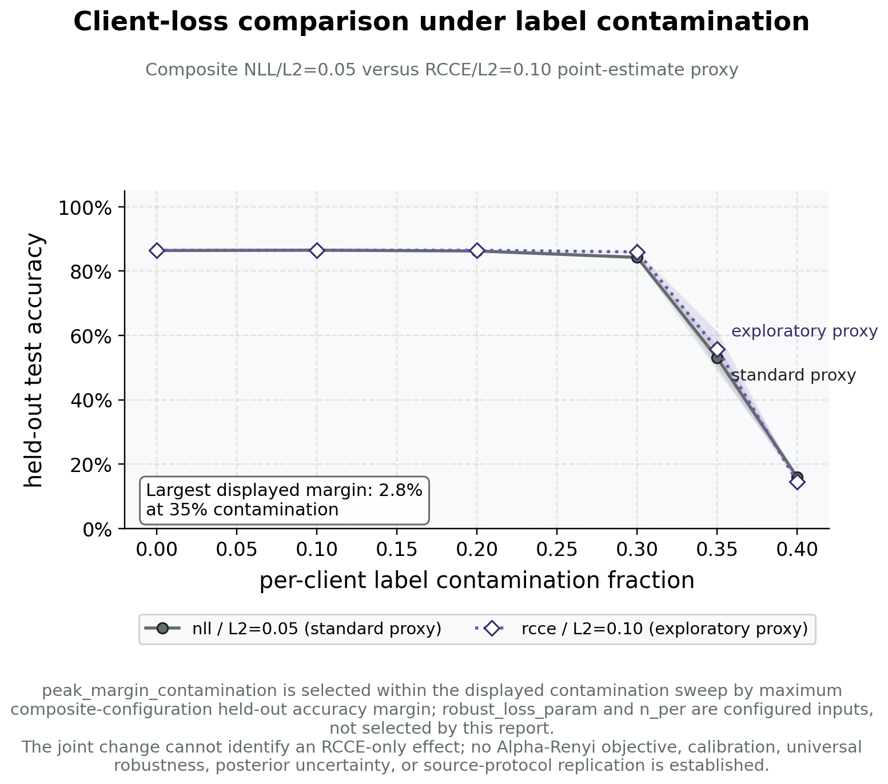

Client-side robustness complement: categorical FedGVI baseline
The sweep of Section 7.5 characterizes the server-side heuristic. This baseline characterizes the per-client axis — the one that carries the provable robustness — on the setting where the robust-Bayes and federated-learning communities established their guarantees (McMahan et al. 2017; Ashman et al. 2022; Bui et al. 2018), so that the active-inference colony and the federated-learning benchmark are measured by the same robust objective.
A federated Bayesian logistic-regression colony is trained under
per-client label contamination. Standard clients run the NLL / KL
objective (nll/KLD); robust clients run the
FedGVI-faithful per-agent generalized-Bayes objective with the robust
cross-entropy and \(\alpha\)-Rényi
client losses (rcce/AR, Eq. (4)). This is the
per-client generalized-Bayes update that recovers standard Bayes in the
trusting limit (Corollary Corollary 6 + Proposition 4,
the 0 and 0 residuals of Section 7.1) and
that inherits the FedGVI bounded-influence robustness
(Mildner et al. 2025). The robust loss is the density-power / \(\beta\)-divergence line (Basu et al. 1998)
and the generalized-cross-entropy line (Zhang and Sabuncu 2018), folded
into the generalized-Bayes objective (Bissiri et al. 2016; Knoblauch et al. 2022).
The robust client’s operating point (\(q = 1.00\), 200 points per client) was chosen, among the values tested, to make this margin visible rather than derived from theory; the sensitivity check below shows the qualitative result does not depend on that specific choice, which is what makes the operating point a defensible one rather than a cherry-picked one.
As the per-client contamination fraction rises, the robust-client
curve tracks the standard curve closely at low-to-moderate
contamination, then opens a genuine margin in the moderate-to-high range
that peaks at 0.35 contamination (margin 0.028) — a margin that holds
above a minimum threshold across a neighborhood of the robust loss
parameter at more than one contamination level
(tests/fedference/test_bnn_baseline.py:: test_rcce_separation_is_not_a_knife_edge_in_loss_param),
not only at the single value plotted, and is reproducible across
independent seeds rather than a single-run artifact; the plotted bands
show the seed-level 95% bootstrap intervals around those means. At the
most extreme 0.40 contamination level swept, both configurations decline
sharply and converge again, with no reliable ordering between them; we
report that point rather than omitting it, since there is no principled
basis (e.g. a known breakdown point for this synthetic contamination
mechanism) for excluding the one part of the sweep that does not favor
the robust client.
The separation in this small logistic-regression setting is nonetheless modest and does not by itself establish a large bounded-influence effect. The recovery identities (Section 7.1) establish implementation compatibility at the named limit; the bounded-influence result comes from the FedGVI theorem only under its matching assumptions (Mildner et al. 2025), not from the size of the gap in this figure. A larger, higher-capacity model is needed to exhibit the effect at the scale reported by the source paper (Section 8.19).

nll loss / KLD regularizer) and the robust
FedGVI configuration (rcce loss / AR
regularizer, \(q=1.00\)) are shown as
separate curves; shaded bands show seed-level 95% bootstrap intervals.
The two curves are close at low-to-moderate contamination, separate over
the moderate-to-high range (peak margin at 0.35 contamination), then
reconverge at the highest swept level, where both decline sharply and
neither curve reliably leads — that level is included rather than
omitted, since it is the one part of the sweep that does not favor the
robust client. Note: this figure plots the NumPy logistic-regression
anchor, not the separate PyTorch deterministic MLP of
the final paragraph (whose 16-hidden-unit, \(\beta=0.5\) configuration is an executed
point-mass-family complement). The recovery identities establish
compatibility at the named limit; the per-client bounded-influence
result belongs to the cited FedGVI theorem under its matching
assumptions, distinct from the server-side heuristic reweighting shown
in the robustness results. Each point and interval is computed across 64
independent seeds.Figure 16 is per-client empirical evidence. Its recovery identity and the source FedGVI theorem have separate roles; neither comes from the aggregation-level statistics of Section 7.5.1. The three robustness axes — the source-conditional per-client update here, the complementary sharp server-side heuristic of Section 7.5, and the conservative variational server rule of Section 11 — remain distinct throughout. Only the per-client axis carries a source-conditional bounded-influence result; the variational server axis carries a raw effective-weight bound (Section 11.3), not an estimator-level guarantee.
PyTorch deterministic-MLP complement (executed). As
a generative-model-free complement, the analysis pipeline instantiates
FedGVI in a deterministic point-estimate MLP — generalized variational
inference with a point-mass variational family:
Linear→ReLU→Linear→softmax with 16 hidden units, the density-power \(\beta\)-loss at \(\beta = 0.5\), trained for 200 Adam steps
per client across 5 clients — and fuses per-test-point softmax
predictions with robust_aggregate at
robustness = 0.5
(fedference.bnn_baseline_torch.run_bnn_torch_experiment,
run under PyTorch 2.12.1). Every number here is executed, not assumed:
the consensus is a valid probability simplex (maximum deviation from
unit mass 2.22e-16 over the test set) and is bit-identical across
repeated seeded runs (deterministic: Yes). Held-out consensus accuracy
at contamination 0.40 is 0.558 for the \(\beta\to 0\) standard client and 0.545 for
the \(\beta = 0.5\) robust client —
this is the same 0.40-contamination endpoint where the NumPy baseline
above also loses its separation (a single seed here, versus the 64-seed
mean above), so the small gap is consistent with, not in tension with,
that figure’s genuine mid-range margin: both axes show the same
qualitative collapse-together behavior at the sweep’s most extreme
point. This run confirms that the server-side aggregation API transfers
to this neural-network setting and produces a valid, deterministic
consensus; it does not establish model-class universality or that the
client-side \(\beta\)-loss’s robustness
margin transfers at this scale; the certified NumPy logistic-regression
baseline above remains the axis’s rigorous evidence. When PyTorch is not
installed the pipeline records a skipped status with unavailable-value
sentinels; a complete certified build therefore installs the
torch optional extra (Section 10).